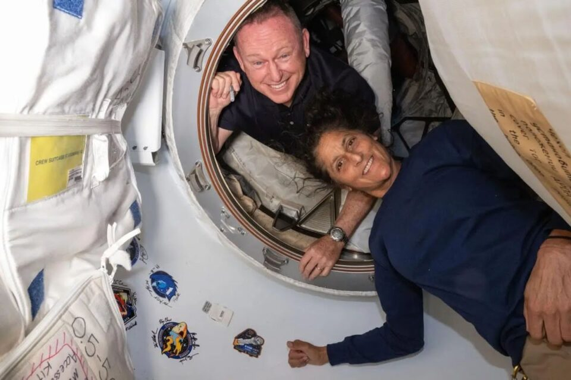

National Aeronautics and Space Administration

Ultima missão
Os astronautas norte-americanos Barry Eugene Wilmore, 62, e Sunita Williams, 59, da Nasa, retornaram à Terra hoje, após passarem nove meses no espaço, em uma viagem que deveria ter durado oito dias.
O que aconteceu
Cápsula Crew Dragon Freedom, da missão Crew-9, com os astronautas, "aterrissou" por volta das 18h57 de hoje (horário de Brasília). Os astronautas pousaram na Costa do Golfo da Flórida, nos Estados Unidos, e foram recolhidos por uma embarcação, que os deixaram em terra firme.